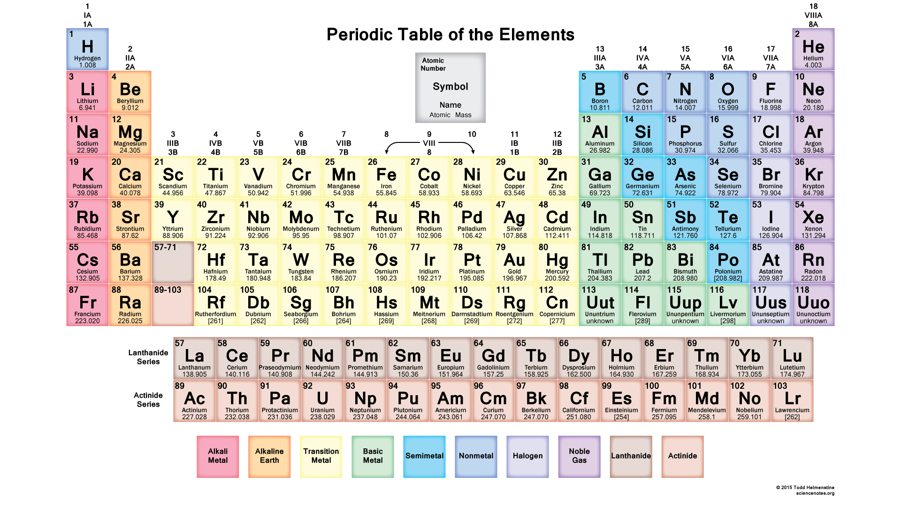

ਦਿਮਿਤ੍ਰੀ ਮੈਂਡਲੀਵ ਨੂੰ ਸਿਰਫ਼ ਇਸ ਲਈ ਹੀ ਨਹੀਂ ਯਾਦ ਕੀਤਾ ਜਾਂਦਾ ਕਿ ਉਸ ਨੇ ਸਾਰਣੀ ਵਿੱਚ ਕੀ ਰੱਖਿਆ, ਸਗੋਂ ਇਸ ਲਈ ਵੀ ਕਿ ਉਸ ਨੇ ਕੀ ਖ਼ਾਲੀ ਛੱਡਿਆ। ਤੱਤਾਂ ਨੂੰ ਪਰਮਾਣੂ ਪੁੰਜ ਅਨੁਸਾਰ ਸਜਾਉਂਦਿਆਂ ਉਸ ਨੇ ਗ਼ਲਤ ਸਮੂਹ ਵਿੱਚ ਧੱਕਣ ਦੀ ਬਜਾਏ ਖ਼ਾਲੀ ਥਾਵਾਂ ਛੱਡੀਆਂ ਤੇ ਭਵਿੱਖਬਾਣੀ ਕੀਤੀ ਕਿ ਇਹ ਅਜੇ ਅਣਖੋਜੇ ਤੱਤਾਂ ਦੀਆਂ ਹਨ। ਉਸ ਨੇ ਐਲੂਮੀਨੀਅਮ ਹੇਠ ਇੱਕ ਥਾਂ ਨੂੰ 'ਏਕਾ-ਐਲੂਮੀਨੀਅਮ' ਕਿਹਾ। ਬਾਅਦ ਵਿੱਚ ਲੱਭੇ ਗੈਲੀਅਮ ਦੇ ਗੁਣ ਉਸ ਦੀ ਭਵਿੱਖਬਾਣੀ ਨਾਲ ਮੇਲ ਖਾ ਗਏ।
Dmitri Mendeleev is remembered not only for what he put in his table but for what he left out. Arranging elements by atomic mass, he refused to force them into wrong groups and instead left gaps, predicting undiscovered elements. He named one space under aluminium 'Eka-Aluminium'. Years later the metal gallium was found, and its properties matched his prediction almost perfectly.
1913 ਵਿੱਚ 25 ਸਾਲਾਂ ਦੇ ਭੌਤਿਕ ਵਿਗਿਆਨੀ ਹੈਨਰੀ ਮੋਜ਼ਲੇ ਨੇ ਧਾਤੂ ਨਿਸ਼ਾਨਿਆਂ ਉੱਤੇ ਇਲੈਕਟ੍ਰੋਨ ਸੁੱਟ ਕੇ ਨਿਕਲੀਆਂ ਐਕਸ-ਰੇਆਂ ਮਾਪੀਆਂ। ਉਸ ਨੇ ਵੇਖਿਆ ਕਿ ਐਕਸ-ਰੇ ਦੀ ਆਵਿਰਤੀ ਨਿਊਕਲੀਅਸ ਦੇ ਧਨ ਚਾਰਜ ਨਾਲ ਜੁੜੀ ਹੈ — ਜਿਸ ਨੂੰ ਅਸੀਂ ਪਰਮਾਣੂ ਸੰਖਿਆ ਕਹਿੰਦੇ ਹਾਂ। ਇਸ ਨੇ ਸਾਬਤ ਕੀਤਾ ਕਿ ਤੱਤਾਂ ਨੂੰ ਪਰਮਾਣੂ ਪੁੰਜ ਨਹੀਂ, ਸਗੋਂ ਪਰਮਾਣੂ ਸੰਖਿਆ ਅਨੁਸਾਰ ਸਜਾਉਣਾ ਚਾਹੀਦਾ ਹੈ। ਇਸੇ ਨੇ ਮੈਂਡਲੀਵ ਦੀ ਸਾਰਣੀ ਦੀਆਂ ਖ਼ਾਮੀਆਂ ਦੂਰ ਕੀਤੀਆਂ।
In 1913 the 25-year-old physicist Henry Moseley fired electrons at metal targets and measured the X-rays they emitted. He found the X-ray frequency was tied to the positive charge in the nucleus — a value we call the atomic number. This proved elements should be ordered by atomic number, not atomic mass, and fixed the flaws in Mendeleev's table.
ਆਧੁਨਿਕ ਆਵਰਤ ਸਾਰਣੀ ਦੇ ਸੱਜੇ ਪਾਸੇ ਇੱਕ ਪੌੜੀ ਵਰਗੀ ਟੇਢੀ ਲਕੀਰ ਖਿੱਚੀ ਹੁੰਦੀ ਹੈ, ਜੋ ਖੱਬੇ ਦੀਆਂ ਧਾਤਾਂ ਤੇ ਸੱਜੇ ਦੀਆਂ ਅਧਾਤਾਂ ਵਿਚਕਾਰ ਸਰਹੱਦ ਹੈ। ਪਰ ਇਸ ਸਰਹੱਦ ਉੱਤੇ ਬੈਠੇ ਤੱਤ — ਸਿਲੀਕਾਨ, ਜਰਮੇਨੀਅਮ, ਆਰਸੈਨਿਕ — ਕੋਈ ਪੱਖ ਨਹੀਂ ਚੁਣਦੇ। ਇਨ੍ਹਾਂ ਨੂੰ ਉਪ-ਧਾਤਾਂ (metalloids) ਕਹਿੰਦੇ ਹਨ। ਇਹ ਧਾਤਾਂ ਵਾਂਗ ਚਮਕਦੇ ਪਰ ਅਧਾਤਾਂ ਵਾਂਗ ਭੁਰਭੁਰੇ ਹਨ ਤੇ 'ਅਰਧ-ਚਾਲਕ' ਹੋਣ ਕਾਰਨ ਕੰਪਿਊਟਰ ਚਿੱਪ ਦਾ ਆਧਾਰ ਬਣਦੇ ਹਨ।
On the right side of the Modern Periodic Table runs a staircase-like zig-zag line, the border between metals on the left and non-metals on the right. Elements sitting on the border — silicon, germanium, arsenic — refuse to pick a side. Called metalloids, they shine like metals but are brittle like non-metals, and being semiconductors they form the basis of every computer chip.
| English | Punjabi | Meaning |
|---|---|---|
| Periodic Table ਉਚਾਰਨ: ਪੀਰੀਆਡਿਕ ਟੇਬਲ | ਆਵਰਤੀ ਸਾਰਣੀ | Arrangement of elements by increasing atomic number |
| Element ਉਚਾਰਨ: ਐਲੀਮੈਂਟ | ਤੱਤ | Pure chemical substance |
| Group ਉਚਾਰਨ: ਗਰੁੱਪ | ਗਰੁੱਪ | Vertical column |
| Period ਉਚਾਰਨ: ਪੀਰੀਅਡ | ਪੀਰੀਅਡ | Horizontal row |
| Atomic Number ਉਚਾਰਨ: ਐਟਾਮਿਕ ਨੰਬਰ | ਪਰਮਾਣੂ ਸੰਖਿਆ | Number of protons |
| V
alency ਉਚਾਰਨ: ਵੇਲੈਂਸੀ | ਸੰਜੋਜਕਤਾ | Combining capacity |
| English | Punjabi | Meaning |
|---|---|---|
| Periodicity ਉਚਾਰਨ: ਪੀਰੀਆਡੀਸਿਟੀ | ਆਵਰਤੀਪੁਣਾ | Repetition of properties |
| Valence Shell ਉਚਾਰਨ: ਵੇਲੈਂਸ ਸ਼ੈੱਲ | ਬਾਹਰੀ ਸ਼ੈੱਲ | Outermost electron shell |
| Metalloid ਉਚਾਰਨ: ਮੈਟਲੌਇਡ | ਉਪ-ਧਾਤ | Element with properties of both metals and non-metals |
| Isotopes ਉਚਾਰਨ: ਆਈਸੋਟੋਪਸ | ਸਮਸਥਾਨਕ | Same atomic number, different mass |
When elements are arranged in order of increasing atomic masses, groups of three elements (triads) with similar properties are found.
Rule: The atomic mass of the middle element is roughly the average of the atomic masses of the other two elements.
Average of Li and K = (7 + 39) / 2 = 23 (which is Sodium!)
He could only identify three triads from the elements known at that time.
He arranged the known elements in order of increasing atomic mass. He found that the properties of every eighth element were similar to that of the first (like musical notes).
Mendeleev arranged elements by Atomic Mass and similarity of chemical properties. He specifically looked at how elements reacted with Oxygen and Hydrogen (forming Oxides and Hydrides).

Mendeleev famously left gaps in his table for elements that had not yet been discovered. He even predicted their properties!
| Mendeleev's Predicted Name | Actual Element Discovered Later |
|---|---|
| Eka-Boron | Scandium (Sc) |
| Eka-Aluminum | Gallium (Ga) |
| Eka-Silicon | Germanium (Ge) |
(Eka is a Sanskrit prefix meaning "one" or "first")
Mendeleev's table was great, but it had a few unsolvable problems:
The Modern Periodic Table (developed by Henry Moseley) solved Mendeleev's anomalies:
The Modern Periodic Law states that properties depend on Atomic Number, not Mass. This instantly solved the Isotope problem because all isotopes of an element have the exact same atomic number, meaning they only take up one slot! It also fixed the Cobalt/Nickel order.
Click any of the first 20 elements to instantly visualize how their electrons are distributed in shells (K, L, M, N).
Config: -
Notice how elements in the same group (vertical column) have the same number of electrons in their outermost shell!
Based on Atomic Number (ਪਰਮਾਣੂ ਸੰਖਿਆ): Groups (↓) are 18 vertical columns sharing the same valence electrons; Periods (→) are 7 horizontal rows sharing the same number of electron shells.
Explore the zig-zag line that separates metals from non-metals, then quiz yourself.
Do not confuse these two critical concepts!
| Valence Electrons (ਬਾਹਰੀ ਇਲੈਕਟ੍ਰਾਨ) | Valency (ਸੰਜੋਜਕਤਾ) |
|---|---|
| The total number of electrons in the outermost shell. | The combining capacity (how many electrons needed to reach 8, or how many to lose). |
| Trend Across a Period: Constantly increases from 1 to 8. | Trend Across a Period: First increases from 1 to 4, then decreases to 0. |
Choose a direction and a property. The explorer shows whether it rises or falls — and explains why.
In 1913, Henry Moseley showed that the atomic number of an element is a more fundamental property than its atomic mass. This discovery led to the modification of Mendeleev's Periodic Law into the Modern Periodic Law.
Questions based on this passage will follow on the next slides!
What exactly does the 'Atomic Number' represent?
Which anomaly of Mendeleev's table did this discovery instantly fix?
| Merits ✔ | Demerits ✘ |
|---|---|
| Left gaps for undiscovered elements (eka-boron, eka-silicon) | No fixed place for isotopes |
| Correctly predicted their properties | H placed with Group 1 but resembles Group 17 too |
| Corrected some atomic masses | Some heavier elements placed before lighter ones (Co before Ni) |
| Accommodated noble gases later without disturbance | Increasing mass order was not always followed |
Modern Periodic Law: properties of elements are a periodic function of their atomic number.
Given "Group 2, Period 3" you can locate the element (Mg), state 2 valence electrons and 3 shells — a classic 3-mark question.
| Trend | Across a Period (→) | Down a Group (↓) |
|---|---|---|
| Metallic character | Decreases | Increases |
| Non-metallic character | Increases | Decreases |
| Reason | Nuclear pull rises, atoms hold electrons | Extra shells, electrons lost easily |
Classify each element by its position and behaviour in the periodic table. Tap for instant feedback.
To score 100%, you must beat the Forgetting Curve.
This is called Spaced Repetition. Use the ⚡ Quick Revision button (top-right) to re-test yourself now, and re-open this deck over the next days — that simple habit locks the chapter into long-term memory!